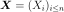
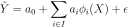
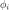

LinearModelStepwiseAlgorithm¶
-
class
LinearModelStepwiseAlgorithm(*args)¶ Stepwise linear model algorithm.
- Parameters
- inputSample, outputSample2-d sequence of float
The input and output samples of a model.
- basis
Basis Functional basis to estimate the trend.
- minimalIndicessequence of int
The indices of minimal model
- directionint, default=FORWARD
BACKWARD, FORWARD or BOTH.
- startIndicessequence of int, default=[]
The indices of start model used for the stepwise regression method. Can only be specified in BOTH mode.
See also
Notes
The objective is to select the best linear regression model by using the stepwise method. Starting from the basis and minimalIndices, the stepwise strategy consists in adding basis elements (if isForward is True), dropping some (if isForward is False) or adding and dropping (both strategy) some elements. At each step, we get a model. We compute the corresponding penalty (BIC or AIC) and we continue repeatedly this process until the penalty could not be improved or the maximum iterations number is reached. Finally we get a regression model between the scalar variable
 and the
and the  -dimensional one
-dimensional one 
writes as follows:
where
 is the residual, supposed to follow the standard Normal
distribution,
is the residual, supposed to follow the standard Normal
distribution, 
the i-th element of the basis.Methods
Accessor to the object’s name.
Accessor to the direction.
getId()Accessor to the object’s id.
Accessor to the input sample.
Accessor to the maximum iteration number.
getName()Accessor to the object’s name.
Accessor to the output sample.
Accessor to the penalty.
Accessor to the result.
Accessor to the object’s shadowed id.
Accessor to the object’s visibility state.
hasName()Test if the object is named.
Test if the object has a distinguishable name.
run()Run the algorithm.
setMaximumIterationNumber(maximumIteration)Accessor to the maximum iteration number.
setName(name)Accessor to the object’s name.
setPenalty(penalty)Accessor to the penalty.
setShadowedId(id)Accessor to the object’s shadowed id.
setVisibility(visible)Accessor to the object’s visibility state.
-
__init__(*args)¶ Initialize self. See help(type(self)) for accurate signature.
-
getClassName()¶ Accessor to the object’s name.
- Returns
- class_namestr
The object class name (object.__class__.__name__).
-
getDirection()¶ Accessor to the direction.
- Returns
- directionint
Direction.
-
getId()¶ Accessor to the object’s id.
- Returns
- idint
Internal unique identifier.
-
getMaximumIterationNumber()¶ Accessor to the maximum iteration number.
- Returns
- maximum_iterationint
Maximum number of iterations.
-
getName()¶ Accessor to the object’s name.
- Returns
- namestr
The name of the object.
-
getPenalty()¶ Accessor to the penalty.
- Returns
- penaltyfloat
Penalty.
-
getResult()¶ Accessor to the result.
- Returns
- result
LinearModelResult The result.
- result
-
getShadowedId()¶ Accessor to the object’s shadowed id.
- Returns
- idint
Internal unique identifier.
-
getVisibility()¶ Accessor to the object’s visibility state.
- Returns
- visiblebool
Visibility flag.
-
hasName()¶ Test if the object is named.
- Returns
- hasNamebool
True if the name is not empty.
-
hasVisibleName()¶ Test if the object has a distinguishable name.
- Returns
- hasVisibleNamebool
True if the name is not empty and not the default one.
-
run()¶ Run the algorithm.
-
setMaximumIterationNumber(maximumIteration)¶ Accessor to the maximum iteration number.
- Parameters
- maximum_iterationint
The maximum number of iterations of the stepwise regression method.
-
setName(name)¶ Accessor to the object’s name.
- Parameters
- namestr
The name of the object.
-
setPenalty(penalty)¶ Accessor to the penalty.
- Parameters
- penaltypositive float
The multiple of the degrees of freedom used for the penalty of the stepwise regression method:
2 Akaike information criterion (AIC)
log(n) Bayesian information criterion (BIC)
-
setShadowedId(id)¶ Accessor to the object’s shadowed id.
- Parameters
- idint
Internal unique identifier.
-
setVisibility(visible)¶ Accessor to the object’s visibility state.
- Parameters
- visiblebool
Visibility flag.